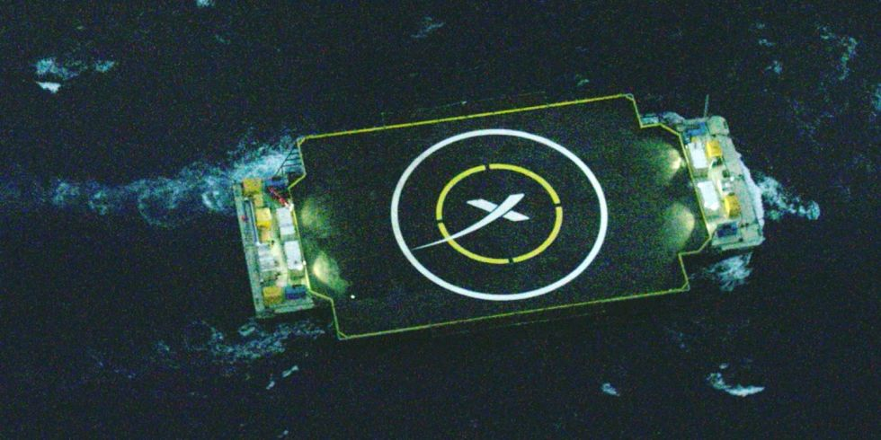

Újrahasznosítható Űrtechnológiák
Miért jó?
Az űrbe jutás rendkívül drága. De az ár nagyrészét nem az üzemanyag teszi ki, hanem a rakéta leváló darabjai, mert miután kifogyott belőlük az üzemanyag, leválnak, és végleg elvesznek.Egy repülőgép körülbelül ugyanannyiba kerül, mint a Falcon 9 rakéta, de egy lágitársaságnak nem kell minden utazás után kidobnia és újragyártania a repülőit, de az űrben minden rakéta csak egyszer repül.
Egy űrsikló már többször használatos, de az üzemanyagtankjai minden alkalommal hasznáhatatlanná válnak, a mellékrakétái pedig sós tengervízbe zuhannak, ami nagyon rosszat tesz, és nagyon drága lenne kihalászni, és felújítani. A megoldás az lenne, hogy a rakéták miután leváltak biztonságosan landoljanak valahol szárazon.
Ezért kezdeményezte, majd hivatalosan bejelentette 2011 Szeptember 29-én a SpaceX, hogy a Falcon 9 első fázisa a teljes üzemanyag kimerülés előtt válljon le, és biztonságosan száljon vissza a szárazföldre, vagy egy úszó platformra, hogy később újra felhasználható legyen.
SpaceX -ről röviden
 A SpaceX egy magán kézben lévő amerikai űrkutatási vállalat, melynek fő célja az űrrepülés költségeinek csökkentése, és egy marsi kolónia lehetővé tétele. A cég jelenleg gyakran kap megbízásokat műhold fellövésre, illetve a nemzetközi űrállomás utánpótlásának szállítására. Az utóbbi időkben sikeres kísérleteket hajtottak végre a Falcon 9 első fázisának biztonságos visszajuttatására, és újra felhasználására.
A SpaceX egy magán kézben lévő amerikai űrkutatási vállalat, melynek fő célja az űrrepülés költségeinek csökkentése, és egy marsi kolónia lehetővé tétele. A cég jelenleg gyakran kap megbízásokat műhold fellövésre, illetve a nemzetközi űrállomás utánpótlásának szállítására. Az utóbbi időkben sikeres kísérleteket hajtottak végre a Falcon 9 első fázisának biztonságos visszajuttatására, és újra felhasználására.
Sikeres kísérletek
A SpaceX számos kísérletet hajtott végre, íme közülük egy:| Kísérlet ideje | Sikerült? | |
| 2015 December 22 | Első sikeres landolás | |
| 2016 Január 17 | Sikeresen leszállt, de hibásan nyílt ki az egyik láb, eldőlt és felrobbant. | |
| 2016 Március 4 | Nem maradt elég üzemanyag | |
| 2016 Április 8 | Első sikeres landolás úszó platformon | |
| 2016 Május 6 | ||
| 2016 Június 15 | Az egyik landoló meghajtó nem adott elég tolóerőt. | |
| 2016 Július 18 | ||
| 2016 Augusztus 14 |
A landolás lépései
 A Falcon 9 kilövése után nem sokkal a föld atmoszférájának elhagyását követően az első fázisa leválik, majd egy 180°os fordulatot vesz, hogy a meghajtóinak tolóerejével lassítsa a sebességét, és így a perapszispontját csökkentve a röppályáját a landolópont felé irányítja.Miután visszalépett az atmoszférába lassító lökésekkel lassul le, és ezután csak légáramlatokkal irányítja magát.
Ha elég közel ér a landoló ponthoz egy utolsó égetéssel segíti a pontos landolást az úszó platformon.
Technikai információk
A Falcon 9 első fázisa 9 meghajtóval rendelkezik, melyek közül 8 körben, egy pedig középpen helyezkedik el. Mind a 9 meghajtó fordítható, és ez adja a Falcon 9 irányíthatóságát. A 9 megjató összesen 7,607kN tolóerőt képes biztosítani tengerszinten, és 8,227kN erőt vákumban. Az első fázis 162 másodpercig működik, amely eglég, hogy kiérjen a rakéta az atmoszférából.A második fázisban csak egy meghajtó található, amely 934kN tolóerővel 397 másodpercig képes meghajtani a rakéta második fázisát.